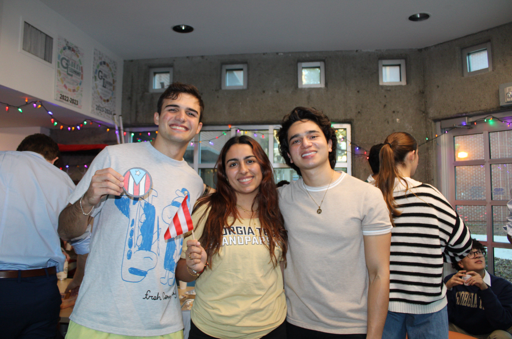
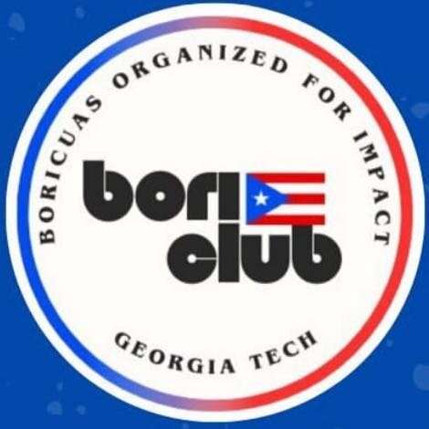
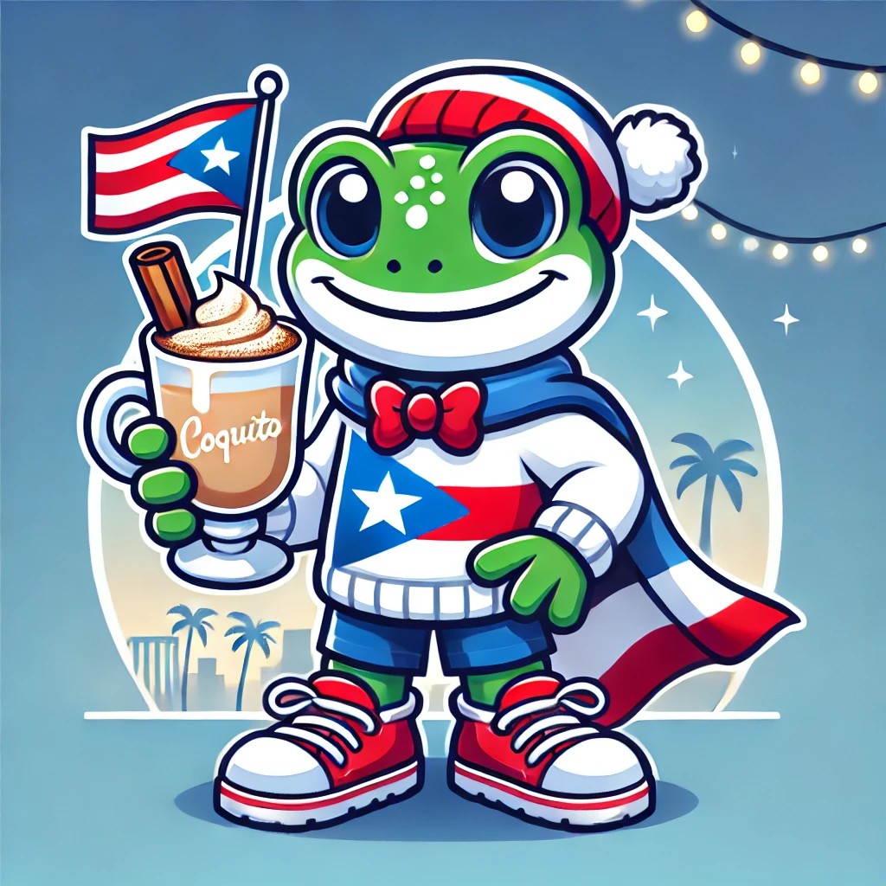

Inaugural BORI Event
- Homemade coquito, sandwiches de mezclita, sorullitos.
- Introduced everyone to the club and its purpose and vision.
Community & Hobbies
The part of the story that is not just papers and control theory.
Research is a big part of my life, but it is not the only part that matters. This page holds the longer version of the community work, culture, and everyday interests that keep the rest of it grounded.
Community
BORI at Georgia Tech
I co-founded BORI (Boricuas Organized for Impact) to make sure Puerto Rican students at Georgia Tech had a space that felt familiar, welcoming, and genuinely useful. The goal was never just to start another campus organization. It was to build something that could help people feel recognized and at home.
That side of my life matters for the same reason the research does: both are about building systems that people can trust.



BORI Moments
Event history
I'll update these with pictures and videos as well coming up soon 🙂
Fall 2024
Inaugural BORI Event
Trivia Night with Snacks
Spring 2025
Winter Org Fair · Enero 30 · 11am-1pm
BORI Kickoff · Febrero 6 · 5pm
Festival de Chocolate · Febrero 21
March Gladness · Marzo 6
BORI Game Night · Marzo 13
Fall 2025
Freshman Kickoff · Agosto 12 · 1:15pm · Skiles 169
Fall Org Fair · Agosto 27 · 11am-1pm · Tech Green
BORI KickOff · Septiembre 3 · 5:30pm · Boggs 103
BORI Professional Panel · Septiembre 24 · 5pm · IC Building
Dominos Tournament · Octubre · 11am-1pm · Kendeda Building
Vamo a Jugal' · Octubre 10 · 4pm · Piedmont Park
Movie Night · Noviembre 13 · 7pm · The Connector Apt
Taller Coquito · Noviembre · 7pm · The Standard Apt
Spring 2026
Resume Review Workshop · Enero 22, 2026 · Crossland 2157
Cafezinho com Brasa · Enero 29, 2026 · The Connector 7th Floor
Joint General Body Meeting with ALPFA and Cisco · Febrero 3, 2026 · Scheller 300
World Baseball Classic Watch Party · Marzo 6, 2026 · Inspire Apt
Hobbies
Do Ph.D Students Have Lives?
When I'm not exercising my weak brain muscles I try to work out my other muscles, mainly so I can afford to indulge in my main hobby of cooking. When an find the time and discipline, I also love practicing my salsa technique at my dance studio and out at socials, as well as reading books about history, psychology and, recently, memoirs.
To lift or not to lift, that is the question.
I'm my own private chef. And my client has exotic taste.
Meh I'm getting better.
I do eventually finish books I start after the fifth time I try reading them.